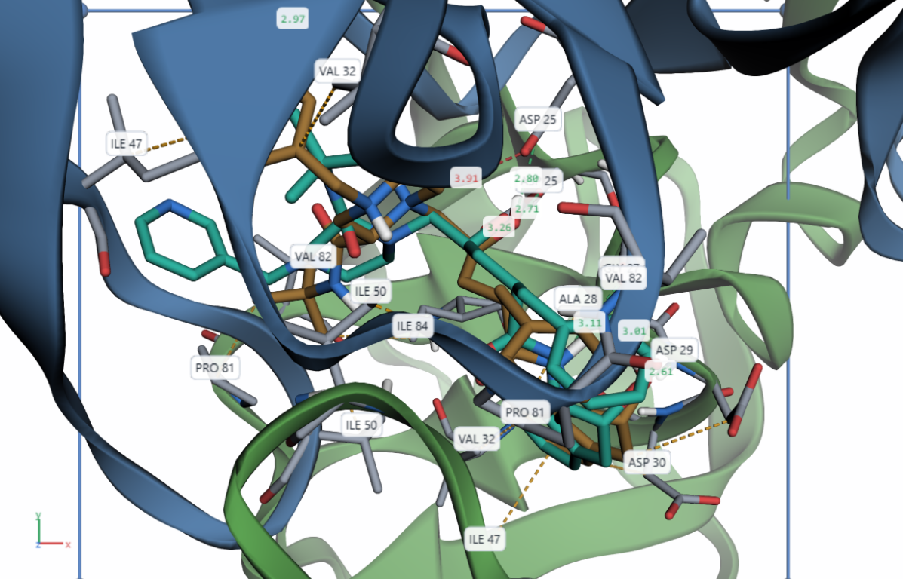
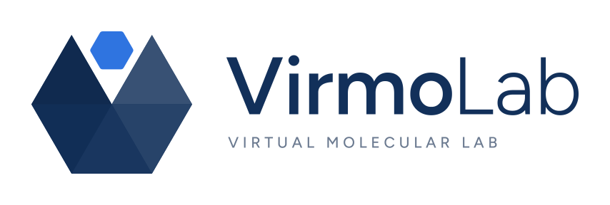
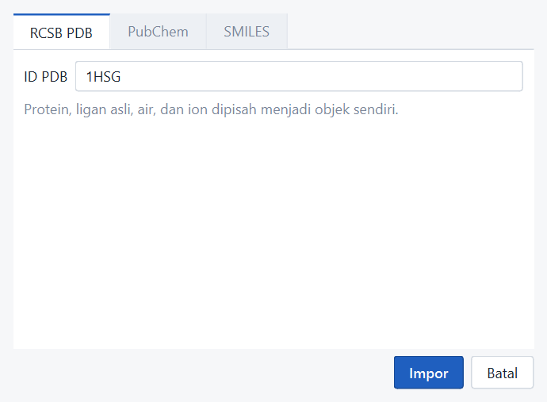
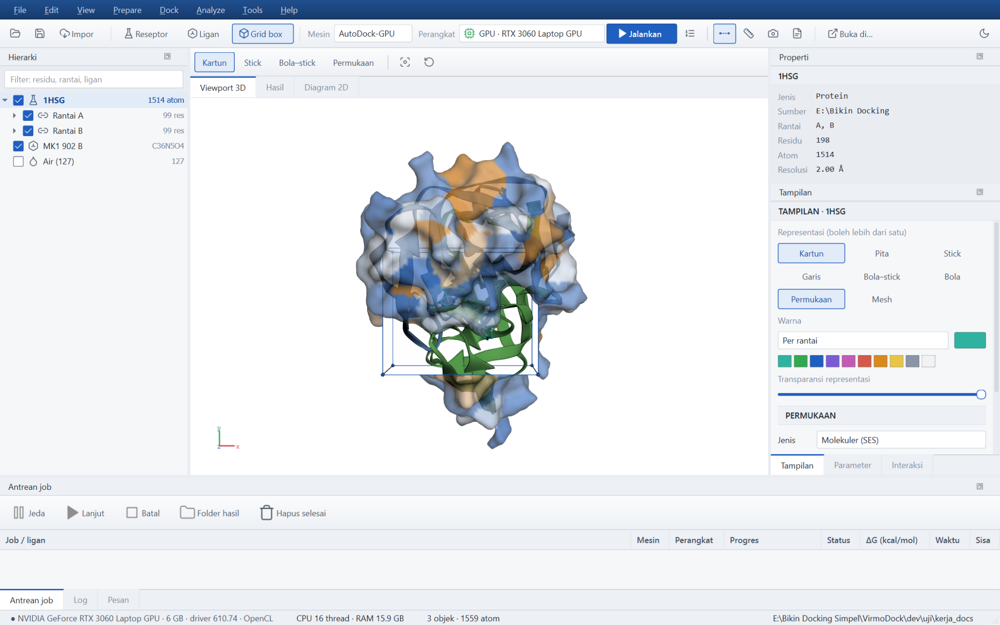
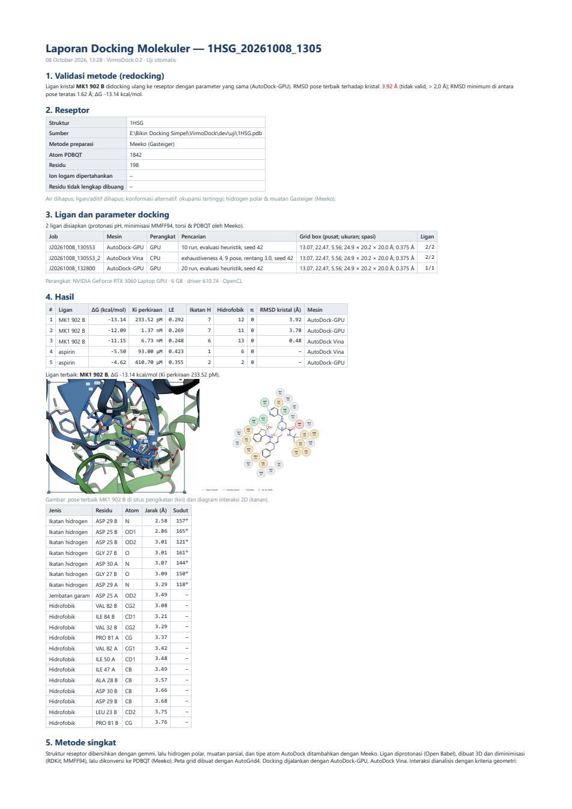

Impor protein, preparasi, grid box, validasi redocking, docking ligan, analisis interaksi,
ekspor gambar publikasi, dan laporan PDF — semuanya di dalam VirmoDock.

Indinavir hasil docking AutoDock-GPU di situs aktif HIV-1 protease; garis putus-putus = interaksi.
Contoh kasus: HIV-1 protease (PDB 1HSG) dengan indinavir (MK1) dan senyawa flavonoid dari PubChem
VirmoDock {{VERSI}} · {{TANGGAL}}

Sebelum mulai
Tutorial ini membawa Anda melalui satu proyek docking lengkap. Ikuti langkahnya berurutan dengan contoh yang sama;
setelah paham alurnya, ganti protein dan ligan dengan milik penelitian Anda.
Daftar isi
1Mengenal layar VirmoDock
2Mengimpor protein dari RCSB PDB
3Memeriksa struktur dan situs aktif
4Menyiapkan reseptor
5Menentukan grid box
6Validasi redocking (wajib)
7Menyiapkan ligan uji
8Memilih mesin & menjalankan docking
9Memantau antrean job
10Membaca tabel hasil
11Interaksi 3D dan diagram 2D
12Membandingkan ligan
13Ekspor gambar, tabel, struktur
14Laporan PDF dan bab Metode
15Menyimpan dan melanjutkan proyek
ALampiran: daftar periksa, istilah, kriteria
Alur kerja dalam satu pandangan
1 · ImporRCSB / berkas
2 · Reseptorbersihkan, H, muatan
3 · Grid boxsitus pengikatan
4 · Validasiredocking ≤ 2 Å
5 · LiganPubChem / SMILES / berkas
6 · DockingAD-GPU / Vina
7 · AnalisisΔG, interaksi, 2D
8 · Eksporgambar, tabel, laporan
Yang Anda perlukan
VirmoDock sudah terpasang dan terbuka (lihat panduan instalasi terpisah).
Koneksi internet untuk mengambil struktur dari RCSB PDB dan ligan dari PubChem. Tanpa internet, buka berkas PDB/SDF yang sudah Anda unduh lewat File › Buka.
Waktu ± 20–30 menit. Docking satu ligan memakan beberapa detik di GPU (AutoDock-GPU) atau ± 1 menit di CPU (Vina).
Tentang angka di tutorial iniSemua angka (energi, RMSD, waktu) berasal dari uji nyata di laptop dengan RTX 3060. Hasil Anda bisa sedikit berbeda karena docking bersifat stokastik; dengan seed yang sama, hasil dapat diulang.
1Mengenal layar VirmoDock
Gambar 1. Jendela utama setelah protein dimuat.
Bagian
Kegunaan
Menu dan toolbar (atas)
Semua perintah. Toolbar berisi Impor, Reseptor, Ligan, Grid box, pilihan Mesin dan Perangkat, serta tombol biru Jalankan.
Hierarki (kiri)
Daftar objek: protein → rantai → residu, ligan, air, ion, ligan siap docking, hasil pose. Centang untuk tampil/sembunyi; klik kanan untuk gaya, warna, fokus, ekspor.
Tengah
Tab Viewport 3D, Hasil, Diagram 2D (dan Bandingkan bila dipakai).
Kanan
Properti objek terpilih; tab Tampilan (gaya ala PyMOL), Parameter (docking dan grid box), Interaksi.
GPU, driver, dan status OpenCL; progres docking; folder proyek.
Mengendalikan viewport 3D
Putar: seret tombol kiri. Geser: seret tombol tengah, atau Ctrl+seret kiri. Zoom: gulir, atau seret tombol kanan.
F menyesuaikan tampilan ke semua objek; klik kanan objek di Hierarki › Fokuskan untuk mendekatinya.
Klik sebuah atom untuk melihat residu, rantai, dan koordinatnya di panel Properti. M untuk mengukur jarak dua atom.
Mode gelap/terang: Ctrl+T.
2Mengimpor protein dari RCSB PDB
Klik Impor di toolbar (atau Ctrl+Shift+P).
Pada tab RCSB PDB, ketik 1HSG, lalu klik Impor.
VirmoDock mengunduh struktur dan memecahnya menjadi beberapa objek: protein 1HSG (rantai A dan B), ligan asli MK1 902 B (indinavir), dan Air (127).

Gambar 2. Dialog impor dari RCSB PDB.
Cara lain memasukkan struktur: File › Buka (Ctrl+O) atau seret berkas/folder ke jendela. Format yang dibaca: PDB, PDBQT, mmCIF, SDF, MOL2, dan daftar SMILES.
Memilih struktur PDB yang baikUtamakan struktur kristal dengan resolusi ≤ 2,5 Å, dari organisme yang relevan, dan berisi ligan di situs aktif (berguna untuk grid box dan validasi). Resolusi 1HSG adalah 2,00 Å — terlihat di panel Properti.
3Memeriksa struktur dan situs aktif
Sebelum preparasi, pastikan Anda memahami struktur yang akan dipakai:
Klik 1HSG di Hierarki: panel Properti menunjukkan jumlah rantai, residu, atom, dan resolusi.
Buka Rantai A / Rantai B untuk melihat daftar residu. Ketik di kotak filter (mis. ASP 25) untuk mencari residu.
Klik kanan MK1 902 B › Fokuskan untuk melihat kantong pengikatan ligan asli.
Tab Tampilan mengatur gaya ala PyMOL: kartun, stick, permukaan, mesh; warna per elemen, rantai, struktur sekunder, B-faktor, atau hidrofobisitas.

Gambar 3. Permukaan molekul diwarnai hidrofobisitas (oranye = hidrofobik, biru = hidrofilik) untuk melihat kantong pengikatan.
HIV-1 protease adalah dimer; situs aktifnya berada di antara kedua rantai dengan residu katalitik ASP 25 (rantai A dan B). Indinavir mengisi kantong ini.
4Menyiapkan reseptor
Protein dari PDB belum siap didocking: masih ada air, ligan, tanpa hidrogen, dan tanpa muatan parsial. Langkah ini menghasilkan berkas reseptor.pdbqt.
Klik Reseptor di toolbar (Prepare › Siapkan reseptor).
Rantai: biarkan A dan B tercentang (keduanya membentuk situs aktif).
Pembersihan: hapus air ✓, hapus ligan asli & aditif ✓, pertahankan ion logam dalam radius 8 Å ✓ (penting untuk enzim logam seperti karbonat anhidrase; 1HSG tidak punya).
Dalam beberapa detik muncul objek 1HSG (siap). Klik objek itu: panel Properti menampilkan metode, jumlah atom (1842 untuk 1HSG), ion logam yang dipertahankan, dan residu yang dibuang.
Residu dibuang?Residu dengan atom hilang tidak bisa diberi templat dan dibuang. Bila residu itu berada di situs aktif, sebaiknya pilih struktur PDB lain. Daftar lengkap tersimpan di reseptor/laporan_prep.txt.
Proyek dibuat otomatis di folder kerja saat langkah ini selesai.
Gambar 5. Reseptor siap docking beserta propertinya.
5Menentukan grid box (situs pengikatan)
Grid box adalah ruang pencarian docking. Ligan hanya dicari di dalam kotak ini, jadi kotak harus mencakup seluruh situs pengikatan tanpa terlalu besar.
Gambar 6. Kotak biru di viewport; angka pusat, ukuran, dan spasi di tab Parameter.
Cara
Kapan dipakai
Pusat ke ligan asli
Paling umum. Kotak = ukuran ligan kristal + 10 Å (min. 20 Å). Untuk 1HSG terpasang otomatis saat impor.
Pusat ke residu terpilih
Tanpa ligan asli: klik atom residu kunci (Ctrl+klik untuk beberapa residu di Hierarki), lalu tombol ini.
Sesuaikan ke ligan +8 Å
Kotak ketat di sekitar ligan yang dipilih.
Seluruh protein (blind)
Situs belum diketahui. Spasi dinaikkan otomatis; gunakan Vina dengan exhaustiveness tinggi.
Dengan mouse
Shift+seret = geser; Shift+gulir = ukuran; Alt+gulir = satu sumbu (pilih dengan X/Y/Z).
Ukuran yang wajarUmumnya 20–26 Å per sisi untuk ligan seukuran obat. Peringatan kuning muncul bila kotak melebihi 126 titik grid per sumbu (batas AutoGrid) atau lebih dari 30 Å (pencarian kurang efisien).
6Validasi redocking (lakukan sebelum screening)
Validasi membuktikan bahwa kombinasi reseptor, grid box, dan parameter Anda mampu menemukan kembali pose ligan kristal. Tanpa validasi, hasil screening sulit dipertanggungjawabkan.
Pilih mesin dan parameter yang akan dipakai untuk screening (bagian 8), misalnya AutoDock-GPU preset Standar.
Menu Analyze › Validasi redocking…. VirmoDock menyiapkan ligan kristal MK1 902 B (kristal) dari konformasi kristal tanpa minimisasi, lalu men-docking-nya.
Setelah selesai, kotak dialog menampilkan RMSD pose terbaik terhadap kristal, dan viewport menampilkan kristal (karbon magenta) berhimpitan dengan pose (karbon biru).
Gambar 7. Hasil validasi: pose terbaik AutoDock-GPU berhimpit dengan indinavir kristal.
RMSD pose terbaik
Arti
Tindakan
≤ 2,0 Å
Metode valid.
Lanjutkan screening dengan parameter yang sama.
> 2,0 Å
Metode belum mampu mereproduksi pose kristal.
Periksa pusat/ukuran kotak, naikkan jumlah run (preset Teliti), coba mesin lain, pertahankan ion logam/air penting.
Contoh di laptop uji: AutoDock-GPU 1,21 Å dan Vina 0,48 Å — keduanya valid. Hasil validasi tersimpan di proyek dan otomatis dikutip di laporan PDF.
7Menyiapkan ligan uji
Klik Ligan di toolbar (Prepare › Siapkan ligan).
Tambahkan ligan: PubChem… lalu tulis satu nama/CID per baris, misalnya quercetin, luteolin, kaempferol, nelfinavir. Bisa juga SMILES…, Tambah berkas… (SDF/MOL2/PDB), atau Tambah folder….
Mis. > 32 torsi atau > 256 atom: tidak bisa di AutoDock-GPU; pakai Vina.
gagal
Alasan ditulis di kolom Keterangan; ligan lain tetap diproses.
Gambar 9. Tabel preparasi ligan: rumus, MW, torsi, status, keterangan.
Ligan yang siap masuk grup Ligan siap docking di Hierarki. Berkasnya ada di folder proyek ligan/pdbqt/.
8Memilih mesin dan menjalankan docking
Buka tab Parameter (Ctrl+D). Bagian Masukan menunjukkan reseptor dan jumlah ligan siap.
Mesin
Pilih bila
Parameter penting
AutoDock-GPU
Laptop punya GPU dengan OpenCL (status bar: “· OpenCL”). Sangat cepat; ideal untuk banyak ligan.
Jumlah run 50 (Standar) / 100 (Teliti); evaluasi heuristik
AutoDock Vina
Tanpa GPU, ligan > 32 torsi, atau ingin pembanding.
Exhaustiveness 16 (Standar) / 32 (Teliti); 9 pose
AutoDock4
Membandingkan dengan penelitian lama yang memakai AD4.
ga_run, ga_pop_size, ga_num_evals (lambat)
Pilih mesin (tombol AD-GPU / Vina / AD4) dan perangkat (GPU atau CPU).
Pilih preset (Cepat, Standar, Teliti) lalu Terapkan. Biarkan seed = 42 agar hasil bisa diulang.
Klik Jalankan (F5). Semua ligan siap didocking; untuk sebagian saja, pilih ligan itu di Hierarki dulu (Ctrl+klik).
Bila GPU bermasalahJika AutoDock-GPU gagal karena OpenCL/driver, VirmoDock otomatis melanjutkan job dengan Vina di CPU dan menjelaskannya di panel Pesan. Ligan yang melebihi batas AutoDock-GPU dilewati dengan alasan; jalankan ligan itu dengan Vina.
9Memantau antrean job
Gambar 10. Panel Antrean: status, progres, ΔG terbaik, waktu, dan perkiraan sisa waktu.
Job pertama AutoDock-GPU membuat peta grid (AutoGrid4) ± 10–20 detik; job berikutnya dengan kotak yang sama memakai ulang peta itu.
Jeda berhenti setelah ligan yang sedang berjalan; Lanjut meneruskan; Batal menghentikan seketika (ligan selesai tetap tersimpan).
Jendela boleh di-minimize; notifikasi Windows muncul saat job selesai atau gagal.
Bila VirmoDock ditutup saat docking, job berstatus Dijeda. Buka proyek lagi lalu klik Lanjut — ligan yang selesai tidak diulang.
Klik kanan job › Lihat log ligan untuk keluaran asli mesin (.dlg / log Vina).
10Membaca tabel hasil
Gambar 11. Tab Hasil: satu baris per ligan per job, urut ΔG.
Kolom
Arti dan cara membaca
ΔG (kcal/mol)
Energi ikatan prediksi pose terbaik. Makin negatif makin kuat. Bandingkan dengan ligan kristal/obat pembanding pada parameter yang sama, bukan dengan angka dari penelitian lain.
Ki perkiraan
Dihitung dari ΔG pada 298 K; hanya perkiraan kasar.
LE
Efisiensi ligan = −ΔG / atom berat. Membantu membandingkan ligan berbeda ukuran; ≥ 0,3 umumnya dianggap baik untuk kandidat.
Klaster
(AutoDock) jumlah run yang jatuh di pose terbaik. Klaster besar = solusi konsisten.
RMSD kristal
Hanya untuk ligan kristal (validasi). Hijau ≤ 2 Å.
H / HF / π / Lain
Jumlah ikatan hidrogen, kontak hidrofobik, π–π, dan interaksi lain pada pose terbaik.
Sortir dengan klik judul kolom; saring dengan nama atau isian ΔG ≤.
Klik panah di kiri baris untuk melihat semua pose ligan itu.
Klik dua kali sebuah baris untuk memuat pose ke viewport.
Etika ilmiahHasil docking adalah prediksi komputasi, bukan bukti aktivitas biologis. Gunakan untuk menyaring dan memprioritaskan kandidat, lalu konfirmasi dengan uji eksperimen.
11Interaksi 3D dan diagram 2D
Setelah pose dimuat (klik dua kali baris hasil), tab Interaksi menampilkan daftar interaksi per jenis dengan jarak dan sudut; viewport menggambar garis putus-putus berwarna dan residu kontak sebagai stick.
Gambar 12. Interaksi indinavir hasil docking dengan HIV-1 protease.
Centang/hapus centang jenis interaksi untuk menampilkan hanya yang Anda butuhkan; matikan Label jarak bila gambar terlalu ramai.
Klik baris interaksi untuk memfokuskan residu tersebut.
Bandingkan pose ke-2, ke-3, dst. dengan mencentang objek Pose n di grup Hasil · … pada Hierarki.
Tab Diagram 2D menggambar struktur ligan dengan residu di sekelilingnya — ringkasan interaksi yang lazim di naskah. Simpan sebagai SVG/PDF (vektor) atau PNG/TIFF.
Gambar 13. Diagram interaksi 2D. Hijau = ikatan hidrogen, oranye = hidrofobik, abu-abu = kontak van der Waals.
12Membandingkan ligan
Di tab Hasil, centang kolom pertama untuk 2–4 ligan.
Klik Bandingkan. Tab baru menampilkan satu viewport per ligan, daftar residu yang berinteraksi dengan semua ligan, dan peta panas residu × ligan.
Samakan sudut pandang dengan viewport utama menyeragamkan arah pandang semua panel.
Gambar 14. Perbandingan pose dan peta panas interaksi (HB = ikatan hidrogen, HF = hidrofobik, vdW = van der Waals).
Tombol Peta interaksi di tab Hasil menampilkan peta panas untuk seluruh hasil screening — residu yang paling sering berinteraksi biasanya residu kunci situs aktif.
13Ekspor gambar, tabel, dan struktur
Semua ekspor ada di File › Ekspor… (Ctrl+E).
Gambar 15. Pusat Ekspor.
Kategori
Pilihan yang disarankan
Gambar 3D
Atur sudut pandang dulu di viewport. Preset Jurnal 2 kolom · 180 mm · 600 dpi, format TIFF (LZW) atau PNG, latar putih. Gambar dirender ulang pada resolusi penuh dan DPI tertulis di berkas.
Diagram 2D
SVG atau PDF (bisa diedit di Inkscape/Word), lebar 85–120 mm.
Struktur
Kompleks PDB (reseptor + pose; buka di PyMOL/Discovery Studio), SDF bertag untuk semua ligan terbaik (berisi ΔG, Ki, LE, interaksi, SMILES).
Tabel
Excel (.xlsx) berisi lembar Ringkasan, Semua pose, Interaksi, Parameter, Info; atau CSV dengan pemisah titik koma untuk Excel berbahasa Indonesia.
Tombol kamera di toolbar (Ctrl+Shift+S) langsung membuka kategori Gambar 3D. Tombol Buka di… mengirim objek yang tampil ke PyMOL, ChimeraX, atau Discovery Studio Visualizer bila terpasang.
14Laporan PDF dan bab Metode
File › Laporan PDF… (atau kategori Laporan PDF di Pusat Ekspor) menyusun laporan ringkas: hasil validasi, data reseptor dan preparasi, parameter dan perangkat, 15 hasil teratas, gambar 3D dan diagram 2D ligan terbaik, tabel interaksi, metode singkat dengan kriteria, dan daftar sitasi perangkat lunak sesuai mesin yang dipakai.

Gambar 16. Halaman pertama laporan PDF.
Contoh paragraf Metode
Struktur kristal HIV-1 protease (PDB 1HSG, resolusi 2,00 Å) diperoleh dari RCSB PDB. Air dan ligan dihapus; hidrogen polar, muatan Gasteiger, dan tipe atom AutoDock ditambahkan dengan Meeko melalui VirmoDock {{VERSI}}. Ligan diambil dari PubChem, diprotonasi pada pH 7,4 (Open Babel), diminimisasi dengan MMFF94 (RDKit), dan dikonversi ke PDBQT (Meeko). Grid box berukuran 24,9 × 20,2 × 20,0 Å (spasi 0,375 Å) dipusatkan pada ligan kristal. Docking dilakukan dengan AutoDock-GPU (50 run, seed 42). Metode divalidasi dengan redocking ligan kristal (RMSD 1,21 Å). Interaksi dianalisis berdasarkan kriteria geometri (ikatan hidrogen D···A ≤ 3,5 Å, sudut ≥ 110°; hidrofobik ≤ 4,0 Å).
Sesuaikan angka dengan proyek Anda — semuanya tercantum di laporan PDF dan lembar Parameter pada Excel.
15Menyimpan dan melanjutkan proyek
Proyek tersimpan otomatis di folder kerja sebagai Nama.vmd setiap ada perubahan penting dan setiap 3 menit. Ctrl+S menyimpan seketika.
File › Buka proyek memulihkan semuanya: objek dan gayanya, grid box, parameter, antrean, dan hasil.
Bila listrik mati atau aplikasi tertutup tidak normal, saat dibuka lagi muncul tawaran Pulihkan pekerjaan terakhir.
Isi folder proyek
Keterangan
proyek.json
Semua pengaturan, parameter, status job, ringkasan hasil (+ 5 cadangan di .cadangan/).
reseptor/
Struktur asli, bersih, reseptor.pdbqt, laporan_prep.txt.
ligan/
SDF hasil preparasi dan PDBQT setiap ligan; koordinat kristal untuk validasi.
grid/
GPF dan peta AutoGrid (dipakai ulang).
hasil/<job>/
Keluaran asli mesin (.dlg / _out.pdbqt) dan log per ligan — simpan untuk reviewer.
ALampiran
Daftar periksa satu proyek docking
✓
Langkah
☐
Struktur PDB dipilih (resolusi, organisme, ada ligan di situs aktif).
☐
Reseptor disiapkan; residu yang dibuang tidak berada di situs aktif.
☐
Grid box mencakup seluruh situs pengikatan (tidak ada peringatan kuning).
☐
Validasi redocking RMSD ≤ 2,0 Å dengan parameter yang sama dengan screening.
☐
Ligan uji dan obat pembanding disiapkan; tidak ada status gagal yang terlewat.
☐
Docking selesai; ΔG dibandingkan dengan pembanding pada parameter yang sama.
☐
Interaksi ligan terbaik diperiksa (3D dan 2D) dan masuk akal secara kimia.
☐
Gambar 600 dpi, tabel Excel, dan laporan PDF diekspor; sitasi software dicantumkan.
Istilah
Istilah
Arti
PDBQT
Format AutoDock: koordinat + muatan parsial (Q) + tipe atom (T); untuk ligan juga pohon torsi.
Grid box
Kotak ruang pencarian docking.
Torsi
Ikatan yang dapat berputar selama docking. AutoDock-GPU maks. 32.
C nonpolar ↔ C nonpolar ≤ 4,0 Å (satu kontak terdekat per residu)
π–π
pusat cincin ≤ 5,5 Å; tumpuk ≤ 30°, offset ≤ 3,0 Å; bentuk T ≥ 60°
π–kation
pusat cincin ↔ kation ≤ 6,0 Å, offset ≤ 2,0 Å
Jembatan garam
gugus bermuatan berlawanan ≤ 4,0 Å
Ikatan halogen
X···A ≤ 3,5 Å, sudut C–X···A ≥ 140°
Koordinasi logam
ion ↔ O/N/S ≤ 2,8 Å
Bila ada masalah
Jalankan Tools › Uji mandiri komponen: VirmoDock memeriksa semua mesin dan pustaka, lalu menunjukkan yang gagal.
Baca panel Pesan — setiap galat disertai langkah yang disarankan.
Help › Dokumentasi › Troubleshooting untuk masalah umum (GPU, internet, preparasi, viewport hitam).
Help › Lapor masalah menyusun info sistem dan log untuk Anda salin dan kirim.
Perangkat lunak yang perlu dikutip
Santos-Martins D, et al. Accelerating AutoDock4 with GPUs and gradient-based local search. J Chem Theory Comput. 2021;17(2):1060–1073. doi:10.1021/acs.jctc.0c01006
Morris GM, et al. AutoDock4 and AutoDockTools4. J Comput Chem. 2009;30(16):2785–2791. doi:10.1002/jcc.21256